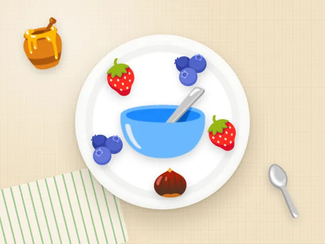

Овсянка с ягодами и орехами
Ккал
399
Белки
11 г
Жиры
14 г
Углеводы
59 г
Состав на порцию
- Овсяная каша на воде — 250 г
- Ягоды (смесь) — 100 г
- Грецкие орехи — 15 г
- Мёд — 10 г
- Щепотка корицы по желанию
Как приготовить
- Залейте 50 г овсяных хлопьев 200 мл кипятка, варите 5 минут.
- Переложите в тарелку, добавьте ягоды.
- Посыпьте рублеными орехами и полейте мёдом.
Калорийность и БЖУ посчитаны по составу на одну порцию. Хотите вписать овсянка с ягодами и орехами в свой рацион? Посчитайте норму в калькуляторе калорий.